赤穂市の出張買取・家財整理 買取アルト 赤穂店
家の片付け、捨てる前に
ちょっと待って！
その中に“売れるもの”があるかもしれません。
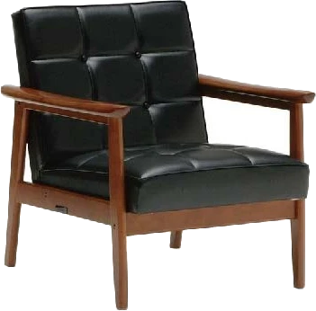
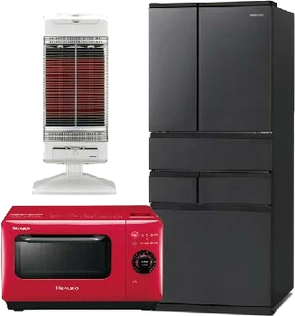
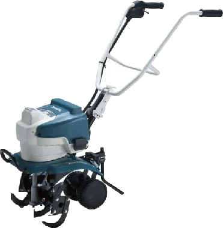
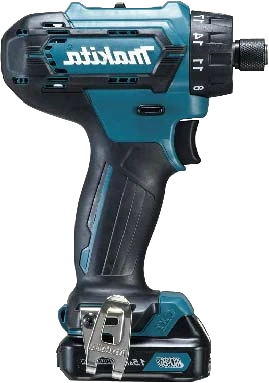
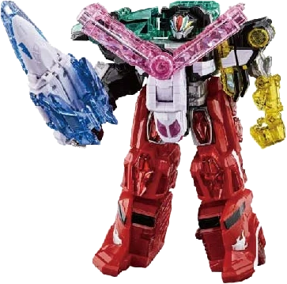
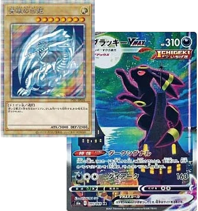
ブランド・貴金属だけが、
買取ではありません。
- ゲーム
- トレカ
- おもちゃ
- 工具
- 農機具
- 家電
- 家具
家の片付けで出てくる物から、家財整理・生前整理・遺品整理までご相談ください。
営業時間外・定休日でも対応できる場合があります。お気軽にご相談ください。
- 出張・査定無料
- 査定だけでも歓迎
- 強引な買取はしません
どんなことでお困りですか？
近いものを選ぶと、詳しいご案内へ移動します
LINEでのご相談方法
写真を送るだけで、
LINEで査定相談できます
-
1LINEを開く
緑のボタンを押してください
-
2写真を送る
気になる物の写真を送るだけ。
まとめて撮った写真でもOKです -
3LINEでお返事
確認後、LINEでお返事します
査定だけ・相談だけでも大丈夫です
- お急ぎの方はお電話ください
090-8226-7635
受付 9:00〜18:00（日曜定休）
営業時間外・定休日でも対応できる場合があります - 最終的な買取金額は、現物を拝見して決まります
こんなふうに送ってください
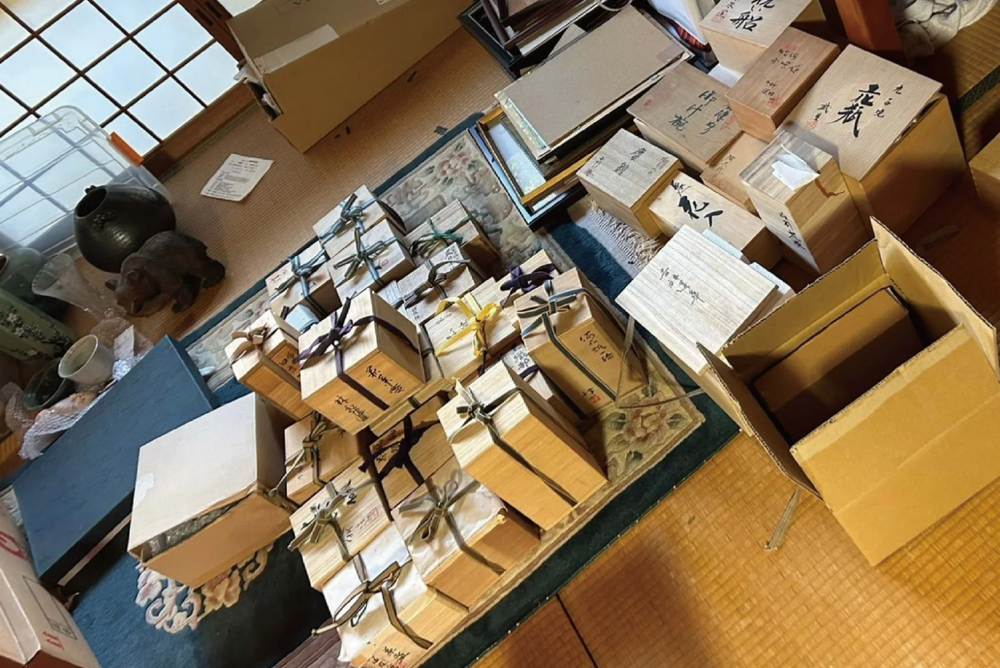
全体を1枚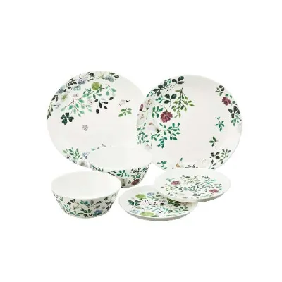
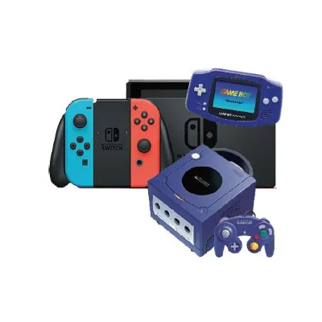
気になる物を数枚実家の片付けで出てきた物です。
見てもらえますか？
- 型番やラベルが見えると、より分かりやすいです
- きれいに撮らなくても大丈夫です
私たちについて
なぜ、整骨院から
買取店が生まれたのか。
-
赤穂鍼灸整骨院 1地域の方と接してきた
赤穂鍼灸整骨院私たちが運営する整骨院です。
地域の患者様と、日々たくさんお話ししています。 -
- 家の片付け
- 使わなくなった物・不用品
- ご家族の遺品整理
2会話から見えてきた、
暮らしの困りごと整骨院で患者様とお話しする中で、
こんなご相談を受けることがありました。 -
3その困りごとにも応えたいと
始めた、買取アルト 赤穂店施術以外でも、地域の方の困りごとの力になれるように。
買取アルトグループの実績
- 総依頼件数10,000件以上
- 総査定点数20万点以上
- 遺品整理士在籍
※買取アルトグループ全体の実績です。赤穂店単独の実績ではありません。
ご自身の家を片付けたい方へ
これからの暮らしのために、
家の中を少し軽くしませんか
こんなこと、ありませんか？
- 重い家具を動かせない
- 古い農機具をどうしたらいいか分からない
- 価値があるか分からず捨てられない
- 知らない業者さんを家に呼ぶのは不安
赤穂鍼灸整骨院を運営する、地域の顔が見えるお店です。私たちについて
捨てる前に、まず査定を。
ブランド品だけでなく、こんな物もご相談ください
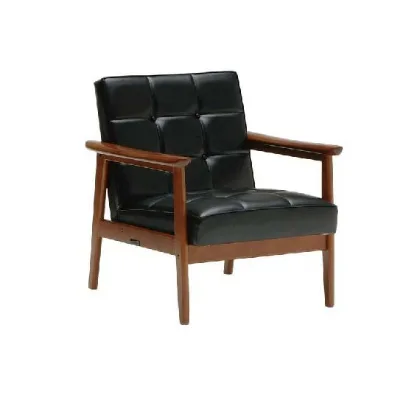
家具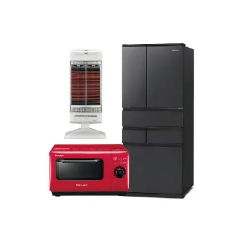
家電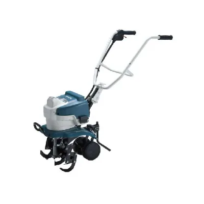
農機具- 食器
- 重い家具も、
搬出まで私たちが行います - 売るかどうかは、
査定額を聞いてから決められます
※買取できない物の扱いも、まずはご相談ください。
営業時間外・定休日でも対応できる場合があります。お気軽にご相談ください。
親御さん・ご実家のことでお悩みの方へ
こんなときに
- 施設への入居・住み替え
- 実家の片付け
- 遺品整理
捨てる前に、
まず買取査定を
- 離れて暮らしていても、
LINEで写真を送って相談できます - 当日の立ち会いは、
ご事情に合わせてご相談ください
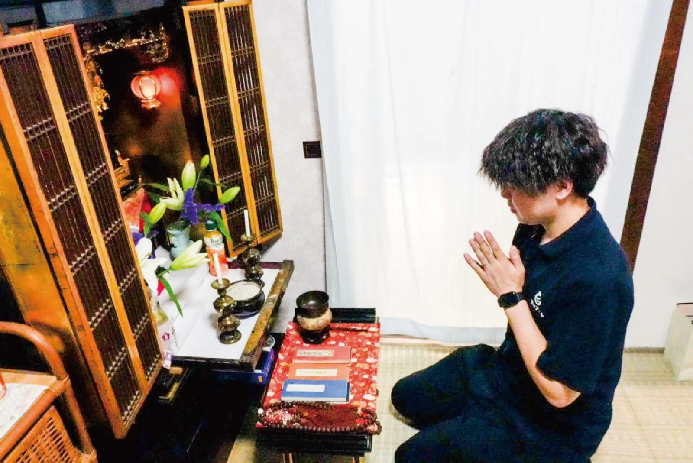
遺品は大切なお品物として、
丁寧に扱います
買取アルトグループには遺品整理士が在籍しています。
家具や家電、骨董品など、幅広くご相談いただけます買取できる物を見る
お電話でも承ります：090-8226-7635
9:00〜18:00（日曜定休）
営業時間外・定休日でも対応できる場合があります。お気軽にご相談ください。
介護・福祉の専門職の方へ
ケアマネジャー・
介護事業者様へ
施設入居・住み替え・遺品のご相談で、「まず買取できる物がないか見てほしい」ときの相談先としてご利用ください。
ご本人・ご家族のご意思を尊重して対応します
- 1ご本人・ご家族のご了承
- 2お電話でご連絡
- 3ご家族と日程を調整
営業時間外・定休日でも対応できる場合があります。お気軽にご相談ください。
トレカ・ゲーム・ホビーを売りたい方へ
昔のカードやゲーム、
眠っていませんか？
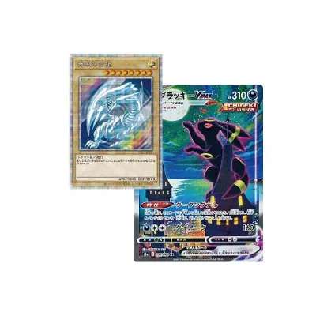
トレカ・
カード- ゲーム機・
ソフト 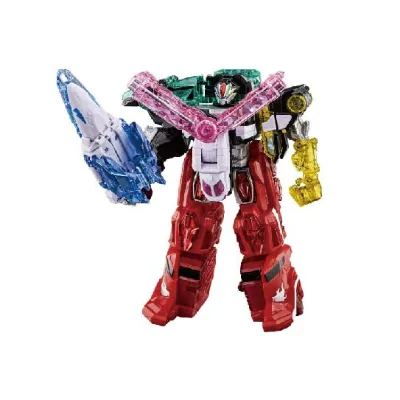
フィギュア・
おもちゃ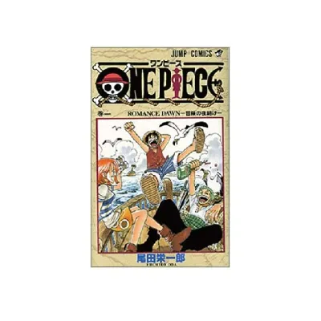
本・
コミック
価値が分からない物も、写真を送るだけで相談できます。「こんな物でも売れる？」だけでもOKです。
写真のコツ
- スリーブに入ったままでOK
- 並べて撮れば、
まとめて見られます - 箱・説明書がなくても
相談できます
※18歳未満の方は、保護者の方からご相談ください。
買取品目
買取できる物
一覧にない物も、お気軽にご相談ください。
家の片付けで出てくる物
趣味・ホビー
アウトドア・スポーツ
暮らしの品・コレクション
ブランド品・貴金属も
※買取の可否・金額は、品物の種類・状態・数量によって異なります。
ご相談からお支払いまで
出張買取の流れ
-
1
LINEまたはお電話でご相談
-
2
内容の確認・日程のご相談
-
3
ご自宅へ訪問・査定
事前にお伝えいただいていない物も、追加で査定できます。
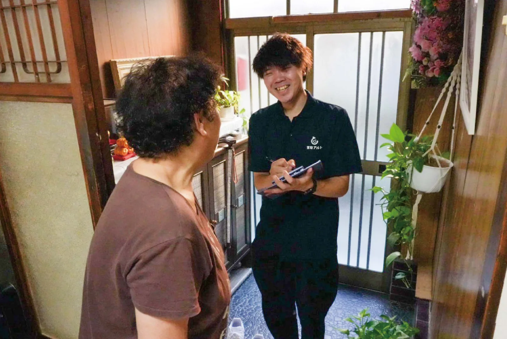
※写真は買取アルトグループでの訪問の一例です。 -
4
査定金額をご提示
ご納得いただけなければ、お断りいただいて大丈夫です。
-
5
搬出・その場で現金でお支払い
当日のお願い
顔写真付きの本人確認書類（運転免許証・マイナンバーカードなど）をご用意ください。
お伺いできる地域
出張対応エリア
赤穂市を中心に
- 相生市
- 上郡町
- たつの市
- 太子町
- 姫路市
- 備前市（岡山県）
上記以外の地域も、品物の内容によって伺える場合があります。まずはご相談ください。
ご相談前の疑問に
よくある質問
費用はかかりますか？
ご相談・出張査定は無料です。まずはお気軽にご相談ください。
査定だけでも大丈夫ですか？断った場合に費用はかかりますか？
はい、大丈夫です。出張・査定は無料です。査定金額をご確認いただき、ご納得いただけた場合のみ買取いたします。
写真だけで買取金額は決まりますか？
写真で分かる範囲でお答えします。最終的な買取金額は、現物を拝見して決まります。
物がたくさんあるのですが大丈夫ですか？
大丈夫です。写真を何枚かに分けて送っていただくか、お電話で状況をお聞かせください。
買取できない物はどうなりますか？
まずはご相談ください。品物の内容によって、対応をご相談させていただきます。
LINEが使えません。
お電話でもご相談いただけます。090-8226-7635（9:00〜18:00・日曜定休）
ご相談はこちら
「これ、売れる？」
からで大丈夫です。
何が売れるか分からなくても構いません。
- 出張・査定無料
- 査定だけでもOK
- 売るかどうかは査定後に決められます
営業時間外・定休日でも対応できる場合があります。お気軽にご相談ください。
店舗情報
- 店名
- 買取アルト 赤穂店
- 代表者
- 中村 紘也
- 所在地
- 兵庫県赤穂市北野中150-5
Googleマップで見る（新しいタブで開きます） - 電話
- 090-8226-7635
受付時間 9:00〜18:00 - 定休日
- 日曜日
- LINE
- LINEで相談する（LINEが開きます）
24時間送信OK - 主な出張エリア
- 赤穂市、相生市、上郡町、たつの市、太子町、姫路市、岡山県備前市
- 料金
- 出張・査定 無料
- 古物商許可番号
- 兵庫県公安委員会 第631662500009